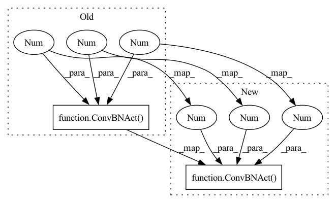

Pattern ID :2230

Before Change
if config.use_se:
block.append(SEUnit(inter_channel))
block.append(ConvBNAct(inter_channel, config.out_ch, 1, 1, 1, config.norm_layer, nn.Identity))
self.block = nn.Sequential(*block)
self.use_skip_connection = config.stride == 1 and config.in_ch == config.out_ch
self.stochastic_path = StochasticDepth(sd_prob, "row")
After Change
block.append(("linear_bottleneck", ConvBNAct(config.in_ch, inter_channel, 1, 1, 1, config.norm_layer, config.act)))
block.append(("depth_wise", ConvBNAct(inter_channel, inter_channel, config.kernel, config.stride, inter_channel, config.norm_layer, config.act)))
block.append(("se", SEUnit(inter_channel, 4 * config.expand_ratio)))
block.append(("point_wise", ConvBNAct(inter_channel, config.out_ch, 1, 1, 1, config.norm_layer, nn.Identity)))
self.block = nn.Sequential(OrderedDict(block))
self.use_skip_connection = config.stride == 1 and config.in_ch == config.out_ch
In pattern: SUPERPATTERN
Frequency: 3
Non-data size: 2
Instances
Fragment ID: 5303568
Project Name: hankyul2/efficientnetv2-pytorch
Commit Name: e07d26d87af78820bbc1759857b72f583ce0f1cd
Time: 2021-11-12
Author: consistant1y@ajou.ac.kr
File Name: src/efficientnet_v2.py
Class Name: MBConv
Method Name: __init__
Parent Class: nn.Module
Fragment ID: 5303569
Project Name: hankyul2/efficientnetv2-pytorch
Commit Name: e07d26d87af78820bbc1759857b72f583ce0f1cd
Time: 2021-11-12
Author: consistant1y@ajou.ac.kr
File Name: src/efficientnet_v2.py
Class Name: EfficientNetV2
Method Name: __init__
Parent Class: nn.Module
Fragment ID: 5303602
Project Name: hankyul2/efficientnetv2-pytorch
Commit Name: afce628b736493ac99cd3a4b122b344b2f297edf
Time: 2021-11-12
Author: consistant1y@ajou.ac.kr
File Name: src/efficientnet_v2.py
Class Name: EfficientNetV2
Method Name: __init__
Parent Class: nn.Module